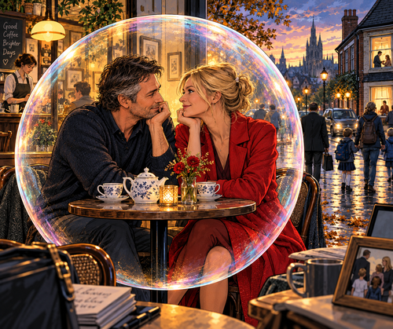

It is now a bizarre, kind of daunting feeling knowing we have kept our position
and we will do our best to keep each other,
now I am so concerned as I feel I have another super
and possibly last only chance to continue our insane dance
and like a cat I think I have just had nine lives spent with only a ghostly reserve left in preserve,
the others (cat’s lives) being depleted on the idealization of you,
and sort of time squandered on the idle and frivolous growing pains of youth,
And I have no idea how to keep your attention,
to keep this connection fresh, anew and heading in a mutual beneficial direction,
racing is my mind to try new ideas and actions to promote our sustained connection;
I am almost desperate in my search to retain our loves hot and steamy passion,
when all I really need is to sit and talk with you, hold your hand and kiss your sweet face and linger on
your caring embrace,
Perhaps I should placate and move you to a friendship state
or maybe I should focus on your spiritual inclinations,
‘tis now making my mind a bit dizzy,
and I wish for the perfect seduction and all my feelings and thoughts move to a sexual dreamy way of you
with me,
with my tummy full of warmth and glowy butterfly sensations,
which jump with joy whenever I know you will be texting, talking, chatting to me,
or even planning a wondrous secret rendezvous at tea,
Can we just wiz an intimate dance and let go of all the outside reality,
and hope and pray that no ones looking as we ingratiate each others loving passion of our personal
individual reflections
and our idiosyncratic, self-absorbed luxury of each other,
Again we are on this life’s highway which has clear rules on the kiss chase we can engage each on other,
but with our headlights and full beam on are at a pace as we speed fast
and quickly past all the red stops, and move with our own calculated haste,
which is nearly criminal in the way we overlook the rest of the human race,
but perhaps not our own fraught individual fragile and flimsy condition?
I suppose I need to keep it simple, must get back to my other life,
and focus on my work and wife,
‘tis about a different reality for which I move back too
and I practically do not comprehend
or recognise this now alien landscape, as it is a different and such a strange location to return to,
like a darkened desert with cold unloving sand to grow within,
from which I have taken you as my oasis retreat and now you is the only home do I cherish,
nay even understand, and of course with absolute delight do I relish,
Being naïve and wanting to value unconditional love as my highest personal goal to live,
breathe and be with, and hopefully to fall into an eternal rest,
knowing I have done my finest to live with my truest loving feelings of you.
Can I escape all the reality of commerce, mortgages, bills, death and taxes,
the trials of aging and keeping healthy just because I think I have found true love from you?
Oh! Pretty Lady you are such a sweet puzzle which teases my mind with no sleep,
no recourse or destination to run to,
I am left meditating, pondering on you, my favorite pastime,
indeed my excellent Lady do I dwell on and dare in face of all the odds to dream and imagine a home I can
build upon.